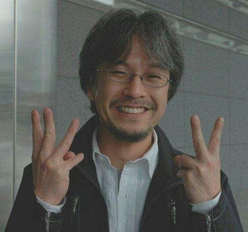

Eiichiro Oda
Eiichiro Oda, nascido 1 de janeiro de 1975 na cidade de Kumamoto, no Japão, é um mangaká, mais conhecido
como o criador do mangá "One Piece". Ele é casado com Chiaki Inaba.
Início de Vida

Como uma criança, Oda foi inspirado por vikings e aspirou a tornar-se um artista de mangá. Ele apresentou
um personagem chamado Pandaman para o clássico mangá Kinnikuman luta de Yudetamago. Pandaman não só foi
utilizado em um capítulo do mangá, mas também voltar como um personagem recorrente na cameo próprias obras de
Oda. Ele é conhecido por adicionar Ester Eggs em seu mangá para os fãs detectarem, incluindo Doskoi Panda.
Oda foi inspirado no criador de Dr. Slump e Dragon Ball, Akira Toriyama. Quando ele era jovem, gostava de
jogar futebol na escola e foi apelidado Odacchi por seus amigos. Ele viria a voz Odacchi no "Rei Football
Dream!" curta que foi adicionada ao "Reino de Chopper na Ilha dos Animais Estranhos", o terceiro filme
One Piece.
Assinatura
Curiosidades
- O nome de Oda muitas vezes aparece nas lombadas de livros no anime.
- Em uma pergunta Shonen Jump perguntando "Se você pudesse ser qualquer personagem de mangá, quem você
seria?" Oda disse que ele gostaria de ser Nico Robin para que ele pudesse" brotar mãos e desenhar
mangá vinte vezes mais rápida."
- O avatar de Oda é uma pessoa com cabeça de peixe.
- Ele é um fumante inveterado.
- Oda é frequentemente chamado de “Odacchi”, “sensei” ou “Oda-sensei” por seus fãs.
- programa de TV japonês Baka Furi divulgou que Oda provavelmente fatura por volta de 3,1 bilhões de ienes
anualmente através da audiência do anime, comissões, licenciamentos internacionais e merchandising.
- Em 2007, Oda recebeu cerca de cem emails com ameaças de morte enviados pela esposa de um de seus
ex-assistentes. Ela foi presa em 2009.
- Em uma das entrevistas de Oda para a Shonen Jump durante as primeiras edições de One Piece, Oda afirmou
que Buggy era até então seu vilão favorito na história, e que se ele pudesse comer uma Akuma No Mi seria
a Bara Bara No Mi.